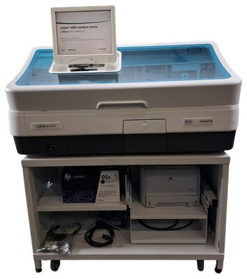

🇭🇺 EU vs 🇨🇭 Швейцария • 120 т/ч vs 88 т/ч • Открытая vs ECL-закрытая
KLEEYA vs Roche Cobas e411
Roche — бренд и ECL-технология, но e411 — младший настольный (88 т/ч всего). KLEEYA производительнее на 36%, открыта и экономичнее в реагенте.

KLEEYA
120 т/ч • Открытая Flash CLIA
VS

Roche Cobas e411
88 т/ч • Закрытая ECL (Roche)
| Параметр | KLEEYA | Cobas e411 | Вывод |
|---|---|---|---|
| Технология | Flash CLIA, магнитные частицы, эфир акридиния | ECL (электрохемилюминесценция) Ru(bpy)3 | Обе высокочувствительны |
| Пропускная спос. | 120 т/ч | 88 т/ч | KLEEYA +36% |
| 1-й результат | 25–30 мин | ≈18 мин | Roche быстрее на 7–12 мин |
| Пробы | 72 | 30 | KLEEYA 2.4× |
| Реагенты | 16 охлаждаемых | 18 | Паритет (+2 у Roche) |
| Расходники | 500 кювет / 192 наконечника | диски, кюветы Roche | KLEEYA — больше автономии |
| Открытость | Открытая — выбор поставщика, микс панелей | Закрытая — только Roche, ~90 тестов | KLEEYA — свобода |
| Портфель | до 170 + уникальные | сильный в кардио/эндокрино/онко, но без ниш MxA/Alzheimer | KLEEYA шире в нишах |
| Экономика | 4–8 потерь/сут, 56 дн стабильность | высокая стоимость теста Roche | KLEEYA дешевле |
| Происхождение | EU (Венгрия/Германия) | Швейцария/Германия | Оба — EU-качество |
Почему KLEEYA vs младший Roche
- На треть производительнее — закроет рост без второго прибора
- 72 пробы vs 30 — в утренний пик не встанете в очередь
- Открытая — не привязаны к прайсу Roche; можно держать BioVendor/Mikrogen панели
- Дешевле тест при сопоставимой чувствительности
Где Roche сильнее
- Бренд и доверие, огромная база ECL-тестов
- ECL-метка очень стабильна, низкий фон
- Быстрее первый результат (18 мин)
Плюсы Cobas e411
- 18 реагентов, компактный настольный
- Roche-качество, LIS, поддержка
- 88 т/ч достаточно для малых лаб
Минусы vs KLEEYA
- На 36% медленнее, 30 проб — узкое горлышко
- Закрытая дорогая экосистема
- Нет уникальных нишевых панелей KLEEYA
Вердикт
Нужен премиум-бренд для малой лабы и готовы платить за закрытость — Roche. Нужен рост, гибкость и контроль себестоимости при том же европейском качестве — KLEEYA на 36% производительнее и в разы автономнее по пробам/расходникам.